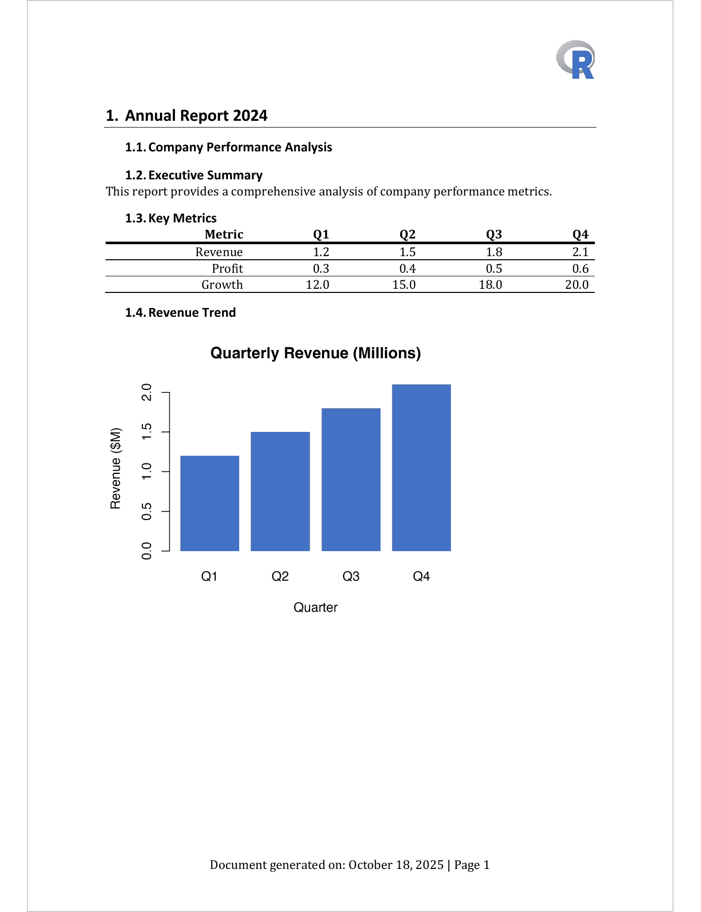

| body_set_default_section {officer} | R Documentation |
Define default section of the document. You can define section propeerties (page size, orientation, ...) with a prop_section object.
body_set_default_section(x, value)
x |
an rdocx object |
value |
a prop_section object |

Other functions for Word sections:
body_end_block_section(),
body_end_section_columns(),
body_end_section_columns_landscape(),
body_end_section_continuous(),
body_end_section_landscape(),
body_end_section_portrait()
# Example 1: Setting page layout properties ----
# This example demonstrates how to configure the default section
# properties for page orientation, type, and margins
# Define custom section properties
# - Landscape orientation for wide tables
# - Continuous section (no page break)
# - Custom margins: top=1.5", bottom=0.75", left/right=2"
default_sect_properties <- prop_section(
page_size = page_size(orient = "landscape"),
type = "continuous",
page_margins = page_mar(bottom = .75, top = 1.5, right = 2, left = 2)
)
# Create a new document
doc_1 <- read_docx()
# Add a wide table that benefits from landscape orientation
doc_1 <- body_add_par(doc_1, "Motor Trend Car Road Tests", style = "heading 1")
doc_1 <- body_add_table(doc_1, value = mtcars[1:10, ], style = "table_template")
# Add some text content
doc_1 <- body_add_par(doc_1, "Sample Text Content", style = "heading 2")
doc_1 <- body_add_par(doc_1, value = paste(rep(letters, 40), collapse = " "))
# Apply the section properties to the entire document
# This must be called at the end, after all content is added
doc_1 <- body_set_default_section(doc_1, default_sect_properties)
# Save the document
print(doc_1, target = tempfile(fileext = ".docx"))
# Example 2: Adding headers and footers ----
# This example shows how to create a document with:
# - A header containing the R logo
# - A footer with the current date and page numbers
# Get the path to R logo
img_path <- file.path(R.home("doc"), "html", "logo.jpg")
# Create header content with the R logo
# The logo is positioned on the right side with specific dimensions
header_content <- block_list(
fpar(
external_img(src = img_path, height = 0.5, width = 0.5),
fp_p = fp_par(text.align = "right")
)
)
# Create footer content with date and page numbers
# Format: "Document generated on: [Date] | Page [X]"
footer_content <- block_list(
fpar(
"Document generated on: ",
run_word_field(field = "Date \\@ \"MMMM d, yyyy\""),
" | Page ",
run_word_field(field = "PAGE"),
fp_p = fp_par(text.align = "center")
)
)
# Define section properties that include header and footer
# The header and footer will appear on all pages
sect_with_hf <- prop_section(
page_size = page_size(orient = "portrait", width = 8.3, height = 11.7),
page_margins = page_mar(
bottom = 1,
top = 1,
right = 1,
left = 1,
header = 0.5,
footer = 0.5
),
type = "continuous",
header_default = header_content,
footer_default = footer_content
)
# Create a new document with content
doc_2 <- read_docx()
# Add a title page
doc_2 <- body_add_par(doc_2, "Annual Report 2024", style = "heading 1")
doc_2 <- body_add_par(
doc_2,
"Company Performance Analysis",
style = "heading 2"
)
# Add some sections with content
doc_2 <- body_add_par(doc_2, "Executive Summary", style = "heading 2")
doc_2 <- body_add_par(
doc_2,
"This report provides a comprehensive analysis of company performance metrics."
)
# Add a table
doc_2 <- body_add_par(doc_2, "Key Metrics", style = "heading 2")
summary_data <- data.frame(
Metric = c("Revenue", "Profit", "Growth"),
Q1 = c(1.2, 0.3, 12),
Q2 = c(1.5, 0.4, 15),
Q3 = c(1.8, 0.5, 18),
Q4 = c(2.1, 0.6, 20)
)
doc_2 <- body_add_table(doc_2, value = summary_data, style = "table_template")
# Add a plot
doc_2 <- body_add_par(doc_2, "Revenue Trend", style = "heading 2")
revenue_plot <- plot_instr({
quarters <- paste0("Q", 1:4)
revenue <- c(1.2, 1.5, 1.8, 2.1)
barplot(
revenue,
names.arg = quarters,
col = "#4472C4",
border = NA,
main = "Quarterly Revenue (Millions)",
ylab = "Revenue ($M)",
xlab = "Quarter"
)
})
doc_2 <- body_add_plot(doc_2, revenue_plot, width = 5, height = 4)
# Apply section properties with header and footer
# The header (with R logo) and footer (with date and page number)
# will appear on all pages
doc_2 <- body_set_default_section(doc_2, sect_with_hf)
# Save the document
output_file <- tempfile(fileext = ".docx")
print(doc_2, target = output_file)